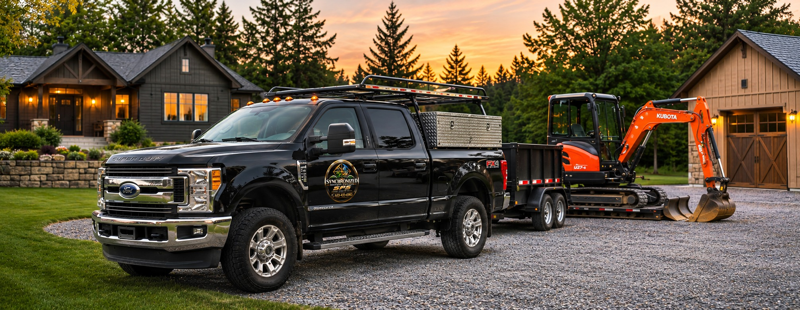

Complete Property
Maintenance &
Site Services
From excavation and drainage to property upkeep and repairs, Synchronized Property Services keeps your property in top condition — residential, commercial, and rural — across Renfrew County and surrounding areas.
in Renfrew, ON
Services
Excavation & Site Work
Professional.
Comprehensive Property Services
A complete range of property maintenance, excavation, construction and cleaning services for your home, business or rural property.
Scroll or use the arrows to explore all 16 services.

RENFREW • ONTARIOOne reliable partner.
More ways to care for your property.
Synchronized Property Services is based in Renfrew, Ontario. We help homeowners, businesses, contractors and rural property owners tackle projects large and small with practical experience and dedicated equipment.
From improving your driveway to preparing a site or maintaining your grounds, our goal is simple: treat every property with care and attention.
Quality work starts with a conversation.
Tell us what needs doing. We'll discuss the scope, access, timing and next steps for an estimate.
Request an Estimate →Local Roots. Regional Reach.
Based in Renfrew and serving Renfrew County, the Ottawa Valley and select projects toward western Ottawa.
Tell us about your project.
Ready to improve your property? Send us the details and we'll help you plan the next step.
Synchronized Property Services · Renfrew, Ontario